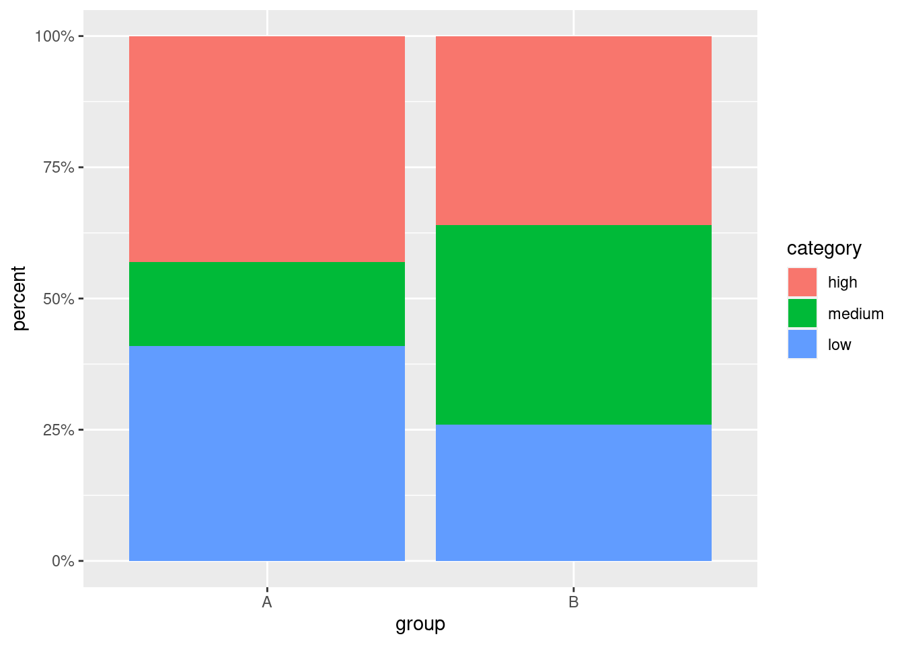
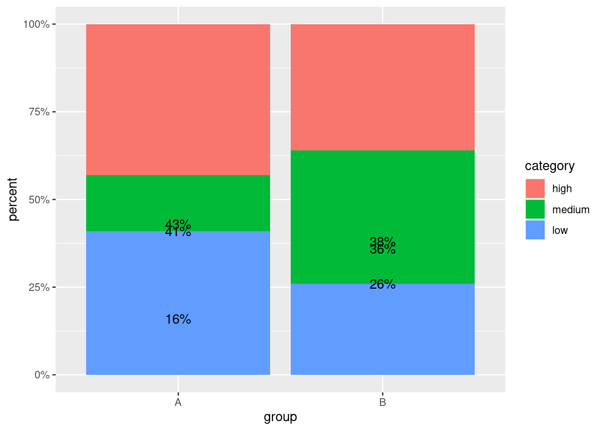

ggplot tips: Using position_stack() for Individual Positioning
We take a look at the differences between position = 'stack' and position = position_stack().
Visualization
Author
Albert Rapp
Published
September 11, 2021
For a long time I have wondered why some people would use position_stack() for position alignment instead of the simpler version position = "stack". Recently, though, I learned the purpose of the former approach when I tried to add data labels to a stacked bar chart for better legibility.
Further, I decided that this knowledge is a good addition to this ggplot2-tips series, so let’s see what position_stack() can do. To achieve this, let us create a small dummy data set.
# A tibble: 6 × 3
group category percent
<chr> <fct> <dbl>
1 A low 0.41
2 A medium 0.16
3 A high 0.43
4 B low 0.26
5 B medium 0.38
6 B high 0.36
Next, take a look at the corresponding stacked bar chart. Since we created a dataset that contains percentages, I took the liberty of appropriately transforming the y-axis via scale_y_continuous().
dummy_dat %>%ggplot(aes(x = group, y = percent, fill = category)) +geom_col() +scale_y_continuous(labels = scales::percent_format())
I believe that this visualization could be improved by adding text labels to each part of the stacked bar chart in order for the reader to immediately detect how large each portion of the bars is. Let’s try this via simply converting the values to strings and adding geom_text() to the plot.
dummy_dat %>%mutate(percent_labels = scales::percent(percent)) %>%ggplot(aes(x = group, y = percent, fill = category)) +geom_col() +geom_text(aes(label = percent_labels)) +scale_y_continuous(labels = scales::percent_format())

Clearly, this did not work as intended because geom_text() uses position = "identity" by default which is why the y-position of the labels is simply determined by its value. Now, here is where I would usually change the positioning via position = "stack". However, the result this approach delivers is somewhat less than perfect.
dummy_dat %>%mutate(percent_labels = scales::percent(percent)) %>%ggplot(aes(x = group, y = percent, fill = category)) +geom_col() +geom_text(aes(label = percent_labels), position ="stack") +scale_y_continuous(labels = scales::percent_format())

Ideally, I would like the labels to appear in the middle of each colored block. We could try to use vjust to move the labels which is not a great idea since every label will be moved by the same amount and the blocks are of different height. Similarly, we could compute the block middle points by hand and use that as separate y-aesthetic in geom_text().
Clearly, this involves a tedious additional computation and we should avoid this, if possible. This is precisely where position_stack() comes in. Conveniently, using position = position_stack() stacks the bars just like position = "stack" does but the function position_stack() has another argument vjust by which we can move the labels individually.
Here, the possible values of vjust range from 0 (bottom of the designated height) to 1 (top of the designated height). Therefore, moving the labels to the middle of each bar is as easy as setting vjust = 0.5.
dummy_dat %>%mutate(percent_labels = scales::percent(percent)) %>%ggplot(aes(x = group, y = percent, fill = category)) +geom_col() +geom_text(aes(label = percent_labels), position =position_stack(vjust =0.5) ) +scale_y_continuous(labels = scales::percent_format())
Finally, one may - and this is definitely a matter of taste - tweak this plot further by changing the color and text formatting. Personally, I like darker colors combined with a white, bold label. In this case, this would look like this.
dummy_dat %>%mutate(percent_labels = scales::percent(percent)) %>%ggplot(aes(x = group, y = percent, fill = category)) +geom_col() +geom_text(aes(label = percent_labels), position =position_stack(vjust =0.5),col ="white",fontface ="bold" ) +scale_y_continuous(labels = scales::percent_format()) +scale_fill_brewer(palette ="Set1")
In summary, we have seen that using position = position_stack() is a more powerful alternative to position = "stack" that allows individual positioning. Nevertheless, as long as the additional arguments of position_stack() are not needed I still find the latter version simpler.
Stay in touch
If you enjoyed this post, then don't miss out on any future posts by subscribing to my email newsletter.